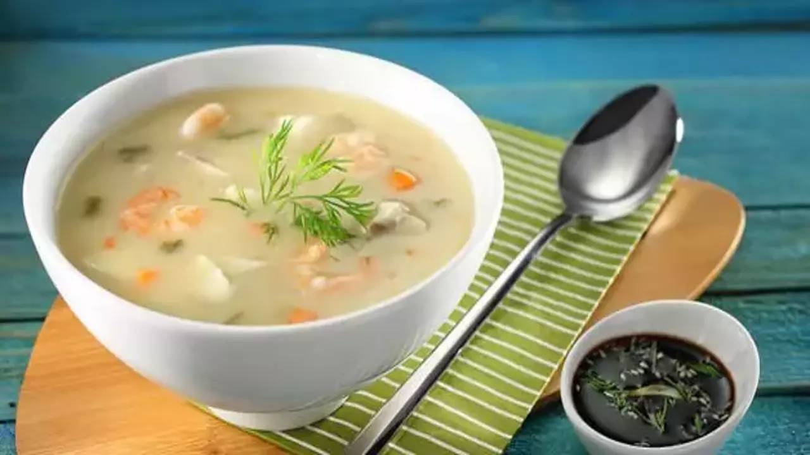

Balık Çorbası
Balık çorbası balık ile yapılan bir çorbadır.

Tarif
Malzemeler
- 1 adet levrek
- 1 adet patates
- 1 adet havuç
- 1 dal kereviz sapı
- 2 diş sarımsak
- 1 adet küçük soğan
- Bir tutam maydanoz
- Bir tutam dereotu
- 1 yemek kaşığı un
- 1 adet defne yaprağı
- 5 su bardağı su (balık haşlamak için)
- 1/2 (yarım) su bardağı soğuk su
- Tuz
- Karabiber
- 1 yemek kaşığı tereyağ
- Sıvı yağ
Yapılışı
- Öncelikle balığımızı temizleyip filetosunu çıkaralım ve kalan parçaları haşlayarak işe başlayalım.
- Haşladığımız balık parçalarını pişirip suyunu daha sonra kullanmak üzere süzelim ve kılçıklarından ayıralım bir kenara alalım.
- Ayırdığımız filetoyu minik minik doğrayıp (iyice kılçıklarından ayırdığınızdan emin olun)bir kaba alalım.
- Sebzelerimizide küçük küçük doğrayalım ve hazırlık işlemlerimizi bitirelim.
- Tenceremize yağlarımızı ekleyelim üzerine önce minik minik doğradığımız havucumuzu ilave edip soteleyelim.
- Üzerine soğanı ekleyip soteleme işlemine devam edelim.
- Soğanımız pembeleşince rendelediğimiz sarımsağımızı ilave edip karıştıralım.
- Üzerine unumuzu ekleyip kokusu çıkana kadar kavuralım.
- 1 bardak soğuk su ve süzdüğümüz balık suyunu da ilave edip kaynamaya başlayınca üzerinde oluşan köpükleri kaşık yardımıyla alalım.
- Çorbamıza doğradığımız patatesimizi ,kereviz sapımızı,defne yaprağımızı ekleyip karıştıralım. (kıvamı size koyu gelirse sıcak su ekleyebilirsiniz)patatesimiz piştikten sonra doğramış olduğumuz levreğimizi ilave edelim tuz ve karabiber ekleyerek fazla karıştırmadan 5 dk kadar pişirelim.
- Haşlayıp kılçığından ayırdığımız balık etlerimizi, doğranmış maydanoz ve dereotumuzu da ilave ederek çorbamızın altını kapatıp karıştıralım.
- Kapağını da kapatıp 5 dk kadar dinlendirelim.
.png)